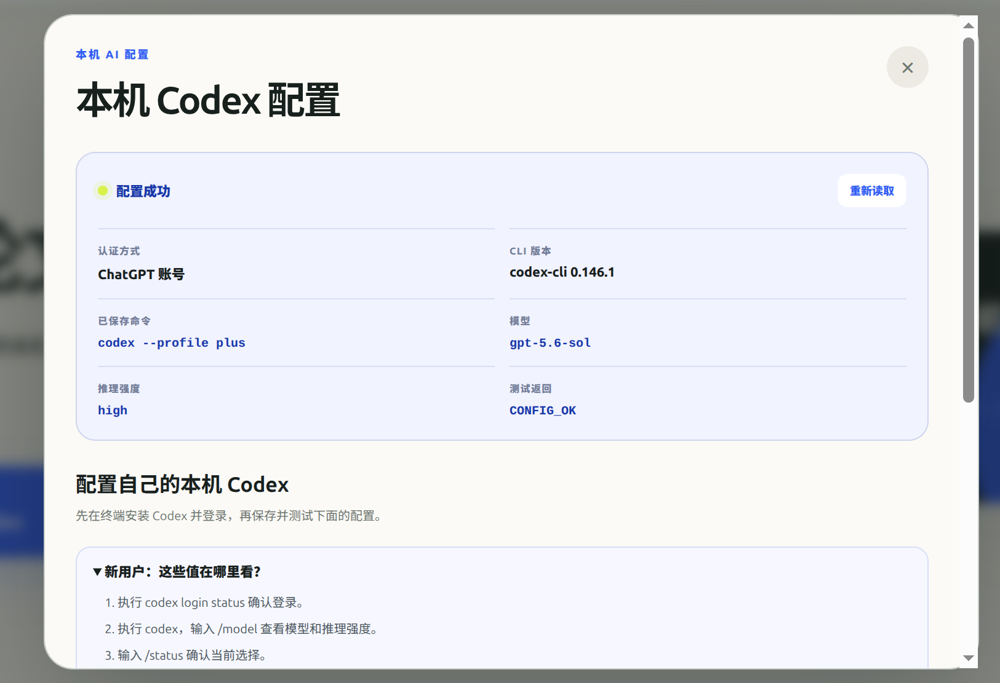
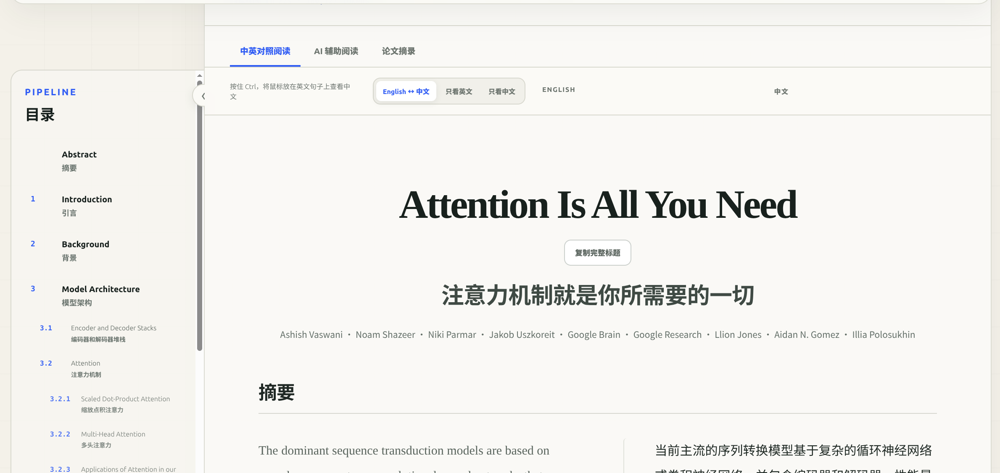
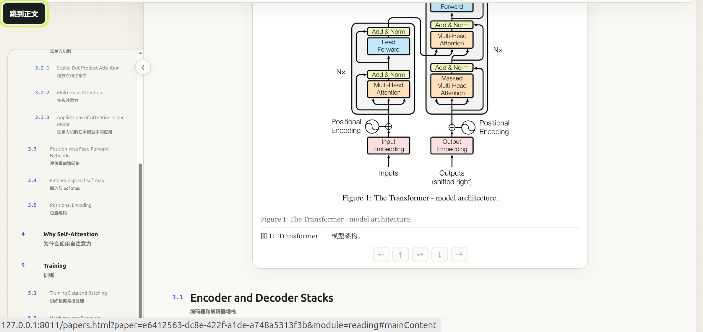
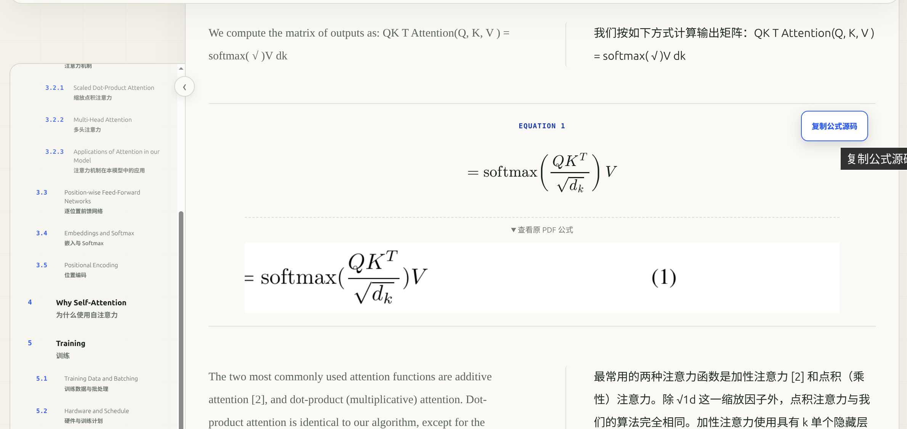
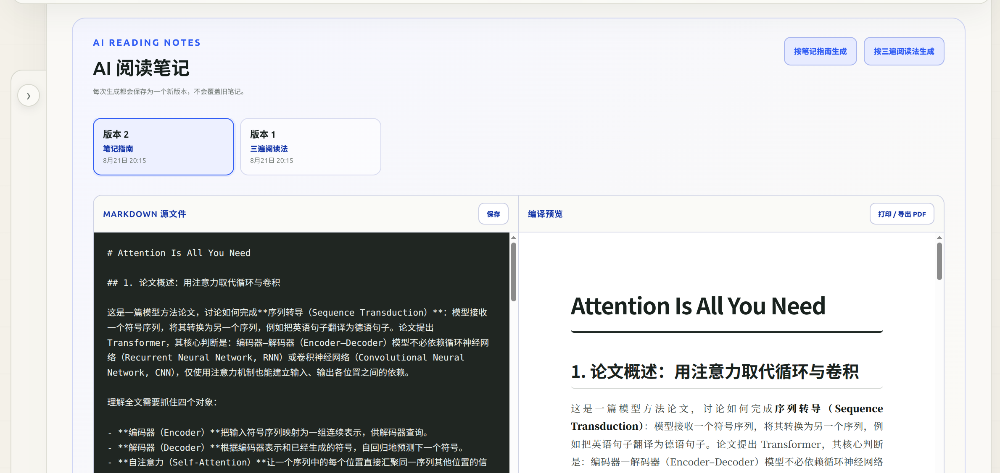
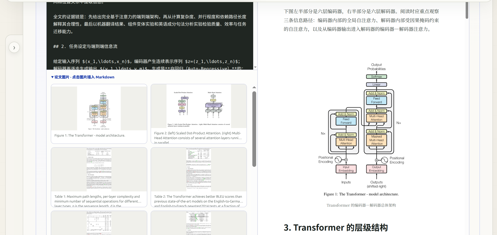
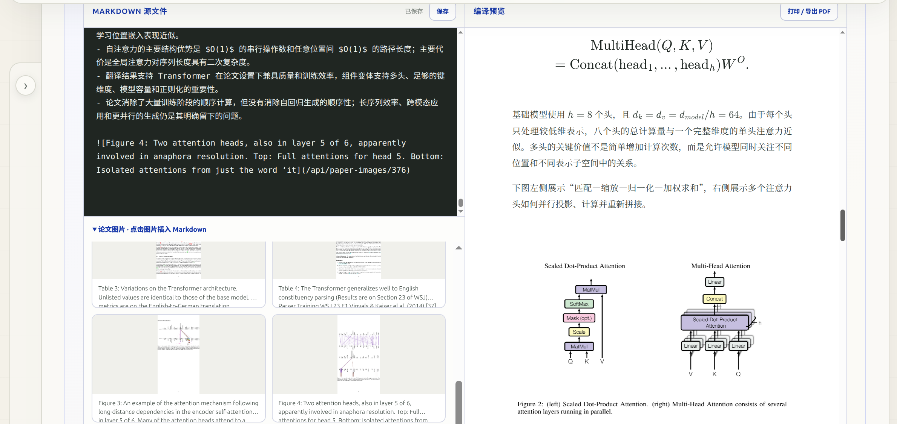
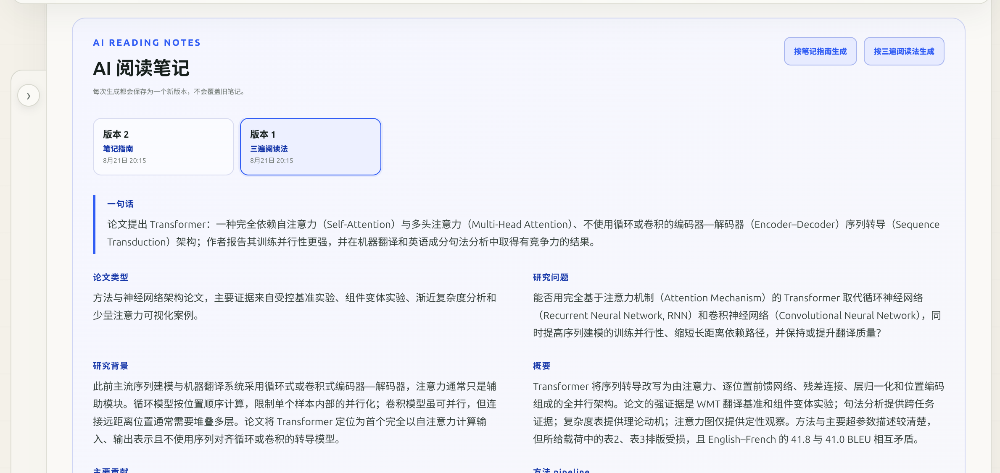
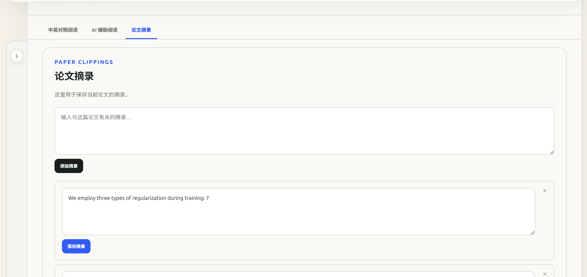

LOCAL AI
连接 Codex 或 Claude Code
在主页保存并测试 Codex 或 Claude Code 的命令与模型，再将测试成功的一个设为当前 AI。账号凭据仍由相应 CLI 自己管理。
REAL WORKFLOW
点击任意截图可以查看原始大图。

LOCAL AI
在主页保存并测试 Codex 或 Claude Code 的命令与模型，再将测试成功的一个设为当前 AI。账号凭据仍由相应 CLI 自己管理。
IMPORT & LIBRARY
拖入一个或多个 PDF，统一选择自动分析、单栏或双栏版式。论文可放入自建文件夹，并显示阅读状态、文件大小、翻译耗时和 token 使用量。

BILINGUAL READING
自动恢复论文标题、摘要和章节目录，提供双语、仅英文、仅译文三种阅读模式。

FIGURES & TABLES
将论文中的图片和表格放回相应正文位置，同时保留原图注和译文。若复杂版式导致边界不理想，可用方向按钮手动扩展裁剪范围。

EQUATIONS
可靠转写的公式以清晰的 LaTeX 重新排版，并可一键复制源码；原 PDF 公式始终可以展开核对，避免只看转写结果而丢失依据。
AI ASSISTED READING
AI 辅助阅读提供“笔记指南”和“三遍阅读法”两种生成方法，每次生成都会保留新版本。阅读正文时也可以选择片段，围绕原文向 Codex 提问。

EDITABLE NOTES
生成结果不是一次性文本：左侧可直接编辑 Markdown，右侧同步查看排版预览。修改可以保存，也可以打印或导出为 PDF。

INSERT PAPER VISUALS
笔记编辑器列出当前论文提取出的图片与表格。点击缩略图即可把带图注的 Markdown 图片引用插入笔记，无需手工寻找图片地址。

VISUAL NOTE COMPOSITION
在 Markdown 源文中组织论点、公式和插图，同时通过预览确认最终阅读效果，让论文中的视觉证据真正进入笔记，而不是与文字分离。

THREE-PASS METHOD
三遍阅读法会从一句话结论、论文类型、研究问题与背景开始，继续检查方法、证据、实验可信度和复现线索，适合系统理解与审查论文。
方法来源：S. Keshav，《How to Read a Paper》，ACM SIGCOMM CCR 37(3)，2007
PAPER CLIPPINGS
把值得保留的原文、回答或手写内容保存到当前论文。摘录只负责记录与编辑，不会自动生成 AI 阅读笔记，也不会与其他论文混在一起。
READY TO READ
所有 PDF、译文、笔记、问答和摘录都保存在本机项目的 data/ 目录中。
开始阅读论文